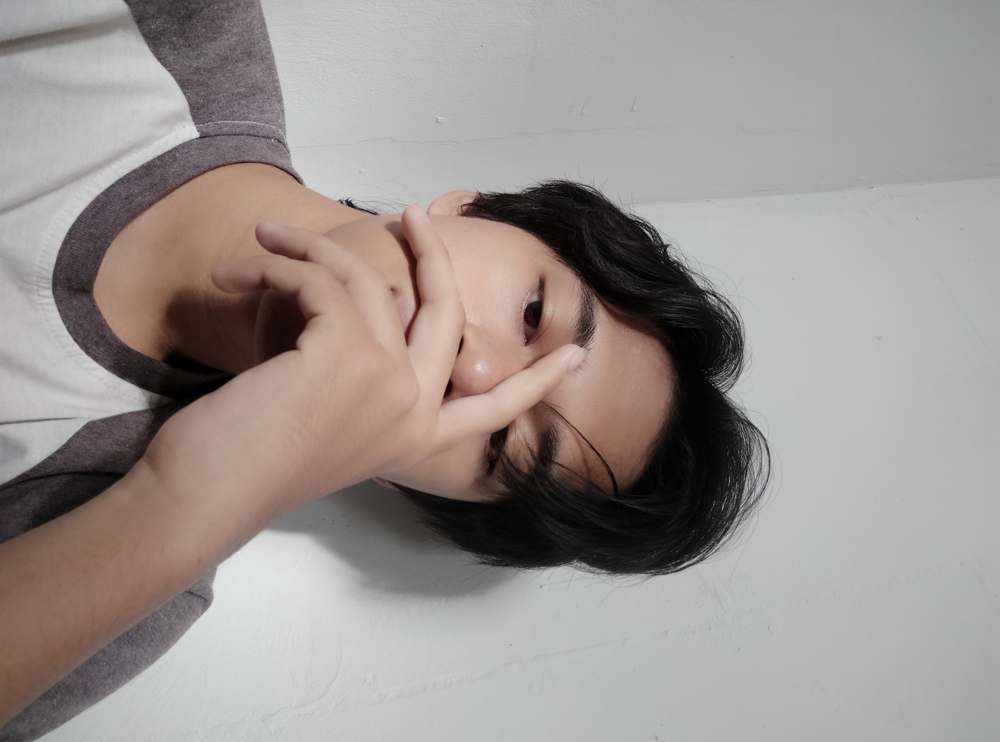

| Picture | Firstname | Lastname | Age | Hobby |
|---|---|---|---|---|
|  | Bintang | Mahaputra | 17 | Playing Video Games |
Hai semuanya. Disini saya akan bercerita tentang pengalaman saya dalam Pembelajaran Jarak Jauh (PJJ) dalam masa Pandemi Covid-19. Tidak terasa sudah lebih dari satu tahun berlalu sejak Pembelajaran Jarak Jauh (PJJ)
Awal pengumuman PJJ, tentu saja saya dan semua teman saya merasa senang, karena kita merasa sekolah dari rumah lebih santai daripada belajar di sekolah. Kita bisa belajar sambil tiduran, main game, makan, dll.
Dari yang biasanya bangun pagi dari jam 5, mandi, sarapan, lalu berangkat ke sekolah dan bertemu dengan teman-teman sekolah, menjadi bangun jam 7, ganti baju dan membuka laptop (tanpa mandi) menjadi keseharian saya
dan semua murid di dunia. Belum lagi ditambah dengan suasana belajar yang baru dan tugas yang terasa lebih banyak daripada yang biasanya, sehingga dibutuhkan waktu bagi saya untuk beradaptasi dengan sistem pembelajaran
yang baru dan asing ini.
Menurut saya, pembelajaran secara daring ini sulit dilakukan di awal, dikarenakan suasana dan sistem nya yang baru. Butuh lebih dari 2 bulan bagi saya untuk beradaptasi terhadap pembelajaran online sehingga saya terbiasa.
Banyak materi yang tidak saya mengerti juga saat dijelaskan melalui kelas online dikarenakan perhatian saya yang sering teralihkan setiap saya melihat ke layar komputer, sehingga saya merasa tertinggal materi. Saya juga merasa
takut dan kurang percaya diri saat bertanya melalui kelas online. Banyak juga godaan yang berasal dari rumah.
Setelah beberapa lama saya belajar dari rumah, saya mulai merasa nyaman dan tidak keteteran oleh tugas dan deadline. Bahkan, belajar dari rumah sudah seperti zona nyaman saya. Saya merasa jika belajar dari rumah lebih bebas daripada
belajar di sekolah dengan beberapa peraturan nya yang mengikat. Saya juga bisa belajar dan bermain game dengan lebih leluasa saat belajar dari rumah. Sekian dari saya, terima kasih atas waktu dan perhatiannya.